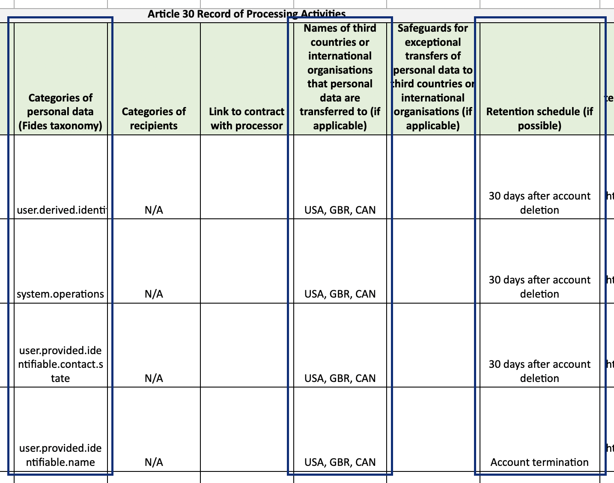

Generating a Data Map
Fides is capable of exporting a data map of your resources to generate an Article 30-compliant Record of Processing Activities (RoPA). This guide will walk through generating a mock RoPA using predefined resources included in the Fides repository.
To follow along, ensure you have the Fides repository cloned and fidesctl installed. Additional support for running fidesctl locally can be found in the first step of the Quick Start guide.
Export the Demo Resources
To apply and export the provided demo_resources, run the following commands:
| Apply and Export Defaults | |
|---|---|
1 2 | |
This will export a data map to the demo_resources/ directory.
Organization
The header block at the top of a data map is composed of properties found in the Organization resource. In a production deployment, this would be composed of publicly available information for your company/organization, but has been pre-populated here to allow exploration.

The newly-generated data map is a direct result of the provided Organization resource manifest (demo_resources/demo_organization.yml):
demo_organization.yml | |
|---|---|
1 2 3 4 5 6 7 8 9 10 11 12 13 14 15 16 17 18 19 20 | |
controller, data_protection_officer, and representative are composed of Contact Detail properties populated in the exported data map.
Additionally, the link to the security policy of an organization can be populated from the Organization resource's security_policy field.
Dataset
The Dataset is primarily used to provide a list of Data Categories which populate the data map. Additional properties can optionally be applied for retention and third_country_transfers.

The newly-generated data map is a direct result of the provided Dataset resource manifest (demo_resources/demo_dataset.yml):
demo_dataset.yml | |
|---|---|
1 2 3 4 5 6 7 8 9 10 11 12 13 14 15 16 17 18 19 20 21 22 23 24 25 26 27 | |
data_categories and retention can be set at any/all of the Dataset, DatasetCollection, and DatasetField levels.
third_country_transfers should be set at the dataset level.
Any Datasets referenced by a System will have this information included as rows of your data map.
System
The System contains the remainder of the attributes on the initial data map.
Each populated property is referenced directly from an associated label in fides_resources/demo_system.yml:
| Data Map Label | Resource Label | Description |
|---|---|---|
| Fides Dataset | dataset_references |
Used to join dataset(s) to the system. |
| Fides System | name |
The name defined at the top level of the system. |
| Department or Business Function | administering_department |
Set at the top level of the system. |
| Purpose of Processing | data_use |
The data_use defined in the privacy_declaration. |
| Categories of Individuals | data_subject |
A data_subject list defined in the privacy_declaration. |
| Categories of Personal Data | data_categories |
Any data_categories set as part of the privacy_declaration (see the output for Demo Marketing System as a clear example). |
| Role or Responsibility | data_responsibility_title |
Set at the top level of the system. |
| Source of the Personal Data | dataset_references |
The Fides dataset name, if referenced by the system. |
| Data Protection Impact Assessment | data_protection_impact_assessment |
All the information related to a Data Protection Impact Assessment, set at the top level of the system. |
Extend the Default Taxonomy
In your initial export, several data map columns are populated with N/A. The default Fides Taxonomy can be extended to replace these empty values with additional data required as part of a Record of Processing Activities.
Example manifest updates are included in demo_resources/demo_extended_taxonomy.yml.
Data Use
Below is an extended Data Use example. Each of these properties is responsible for populating a field on your data map.
| Extended Data Use | |
|---|---|
1 2 3 4 5 6 7 8 9 10 | |
You can now apply this Data Use to the Demo Marketing System in demo_system.yml.
Replace the Demo Marketing System's Data Use of advertising with the above fides_key of third_party_sharing.personalized_advertising.direct_marketing to include its information in your data map.
Data Subject
A Data Subject, shown below, can also be extended to populate your data map with additional information.
| Extended Data Subject | |
|---|---|
1 2 3 4 5 6 7 8 9 10 11 12 13 | |
You can now apply this Data Subject to the Demo Marketing System in demo_system.yml.
Replace the Demo Marketing System's Data Subject of customer with the above fides_key of potential_customer to include its information in your data map.
Generate a RoPA
Now that you have added the additional information around privacy notices and data subject rights, you can export a fresh copy of your data map:
| Apply and Export Defaults | |
|---|---|
1 2 | |
Populated Fields
Opening the new data map will show the previously N/A columns are now populated, resulting in an Article 30-compliant RoPA for one of the two systems defined in demo_resources/.
Below is a mapping of the newly populated columns with their respective values:
| Data Map Label | Description |
|---|---|
| Purpose of Processing | The name of your newly extended data_use set in a Privacy Declaration. |
| Categories of Individuals | The name of your newly extended data_subject set in a Privacy Declaration. |
| Categories of Recipients | The recipients defined in your extended Data Use. |
| Article 6 Lawful Basis for Processing Personal Data | The legal_basis defined in your extended Data Use. |
| Article 9 Condition for Processing Special Category Data | The special_category defined in your extended Data Use. |
| Legitimate Interests for the Processing | If the legal_basis is "Legitimate Interests", the Data Use name is used to identify what the legitimate interest data use is. |
| Link to Record of Legitimate Interests Assessment | If the legal_basis is "Legitimate Interests", a legitimate interests impact assessment is required and should be set using the legitimate_interest_impact_assessment property. |
| Rights Available to Individuals | The rights defined in your extended Data Subject based on the strategy used. |
| Existence of Automated Decision-Making, Including Profiling | The boolean value for automated_decisions_or_profiling, defined in your extended Data Subject. |
Additional Learning
The provided demo_system.yml includes a second System, Demo Analytics, which can be enhanced in the same way as the Demo Marketing System.
Follow the guide to extend the taxonomy again, this time for the Demo Analytics System, to have both systems fully compliant!
Next Steps
We hope this was helpful in understanding the additional properties required for generating an Article 30 compliant RoPA!
If there are any questions or issues you still have, we would love to hear more from you in our Slack Community or in an issue/PR on GitHub.